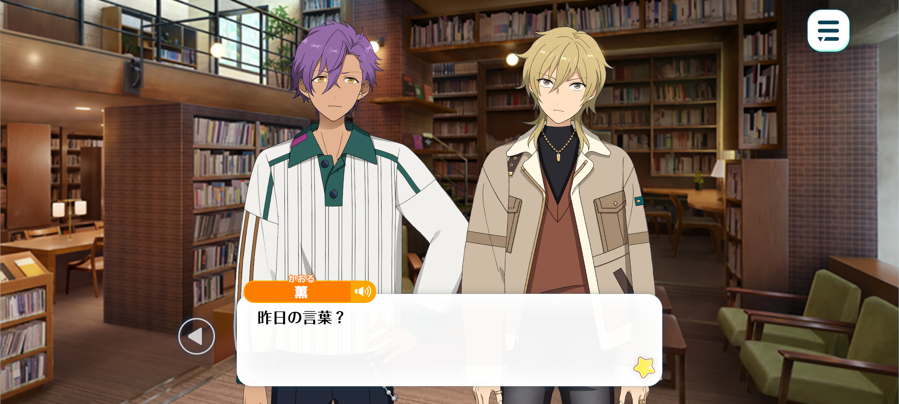
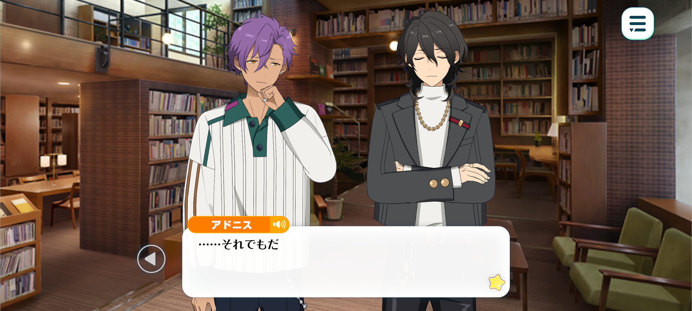
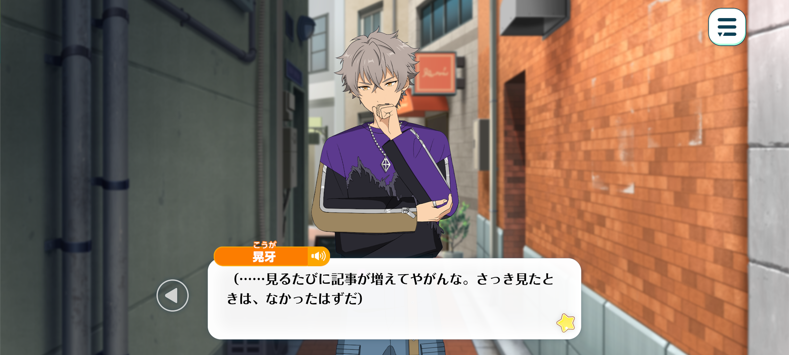
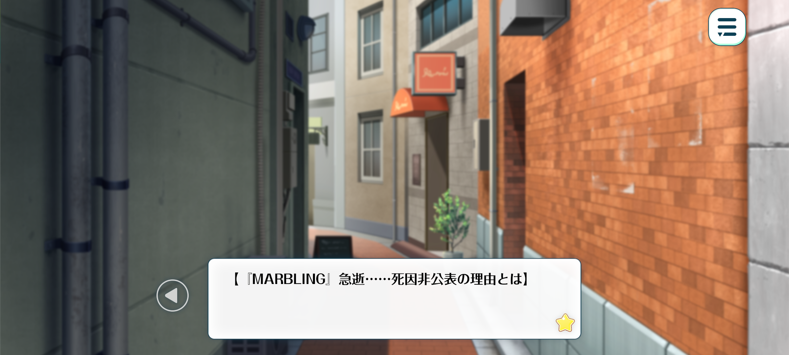
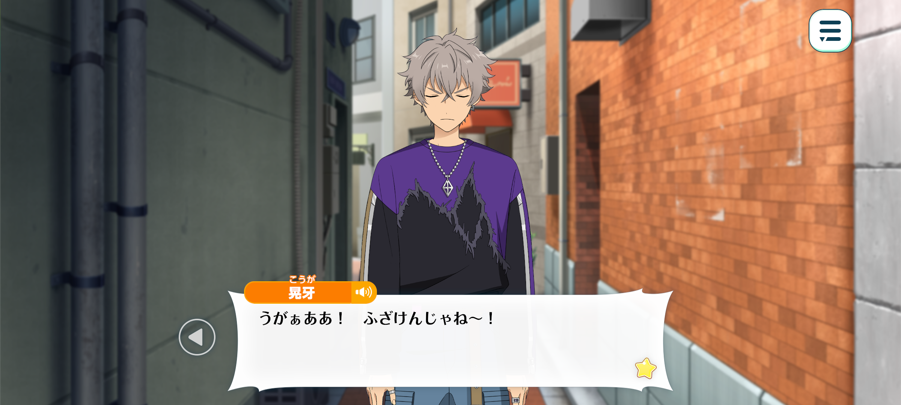
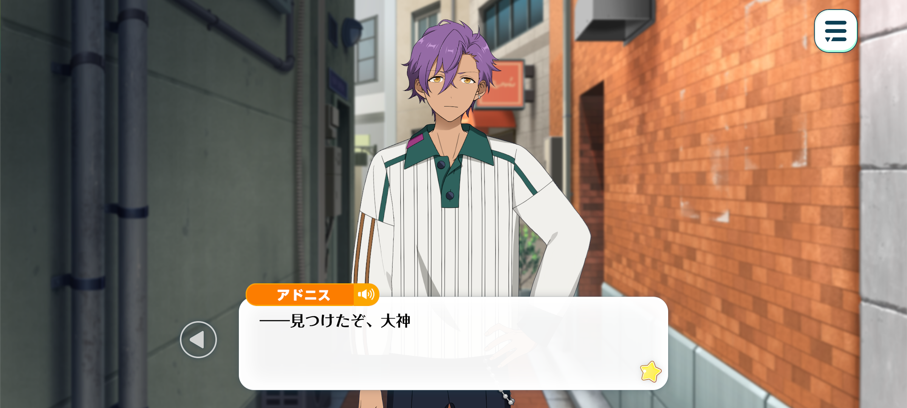

In Memoriam◆Handwriting, Chasing, Rambling
Good-Night / Chapter 3



Adonis: …I see
I feel that what Oogami was saying yesterday has finally made sense to me.
Kaoru: What did he say?
Adonis: At the contest, Oogami said that a group who had been inspired to start playing music by MARBLING “lacked depth”.
He said that there’s music that only those who have lived a full life can make.
I thought he was talking about differences in experience but that does not seem to be the case anymore.
What Oogami admired about him was not the legends of his hayday—
But rather the unpolished rock star who kept performing, even when the world laughed at him for being a “has-been”.
…I’m going to look for Oogami.
Kaoru: Oh, do you know where he is?
Adonis: No.
But I’ll find him. If he’s somewhere in town, I’ll definitely find him.
Kaoru: Haha...Classic Adonis-kun perseverance.
I hate to be that guy but I kinda feel it’s better to leave him be.
He probably disappeared because he wanted to be alone so searching for him is probably gonna make him feel cornered, right?

Rei: I agree. I do not think Koga is in the right headspace to heed anyone’s advice.
If you try to force him to come back, I fear he’ll only become more stubbornly distant.
Adonis: …Even so.
I don’t plan on forcing him to come back. But I’d like to talk.
I don’t want him to deal with this alone.
Rei: ...I see.
I shan’t stop you then. Though, do not forget—
No matter how deeply you may wish to stand at another’s side, there are certain boundaries which should not be crossed.
If you force yourself into his grief, you may only wound yourself further.
Adonis: I understand.
I am more worried about Oogami’s feelings than my own.
...Just seeing his face, talking to him, is enough.
Location: In a deserted back alley in the outskirts of the shopping district

Koga: (...There’s more articles each time I look. Swear most of these ones weren’t here last time I checked.)
(Probably nothin’ worth readin’.)
...Tch.
I coulda ignored them and saved pissin’ myself off. Why am I like this?

MARBLING’s Sudden Passing…The Reason Why His Cause of Death is a Mystery.
Personal Issues? Or Something More—? Internet in Uproar Over Musician’s Sudden Death.
Money Problems, Arguments with his Agency…The Problems that Plagued MARBLING in his Final Years.
(...What the hell are all these articles even tryna say?!)
(No-one knows how he died. If his agency doesn’t tell anyone, then that’s that.)
(Why are they tryna find the answer so badly anyway? Treatin’ someone’s actual life as nothin’ but a clickbait article.)
(Spoutin’ straight up bullshit jus’ for the hell of it, fuckin’ bastards…!)
Legendary Rock Star MARBLING: Looking Back on his Daring Life.
Crazy Stories from MARBLING’s Youth - A Compilation.)
Rare Footage of MARBLING's Debut! Compilation of Performances from his Peak Era!
(...All they talk about is stuff from when he was younger.)
(Nothin’ but stories from ages ago. That’s all they’re talkin’ about.)
(Why’s no-one payin’ attention to current him?)
Former Insider Exposes the Truth... The fuck? Now they come crawlin’ out of the woodwork.
Comin’ online actin’ like you knew him when you worked together for a couple of months before quittin’!
Diggin’ up random bullshit from the past when no-one can even verify if it’s even true…
So anyone can say anything nowadays, as long as it generates clicks? Bullshit.
Is there no-one out there!? No-one out there who thinks the same as me…!?
(...”We stopped seeing anything to do with him once he started going downhill.”)
(”He should have retired ages ago.”, “As excepted of a failure.”

(...Huh?)
(He shoulda retired!? A failure!? They’re so fuckin’ wrong! You jus’ weren’t watchin’ properly!)
(If you don’t know what you’re talkin’ about then keep out of it! Open your fuckin’ eyes!)
uGRAAAA! I’m fuckin’ PISSED!
Who fuckin’ CARES if he wasn’t playin’ to thousands ‘n thousands of people!?
Even when there were only a hundred, fifty, TEN people in the crowd, gramps played better than anyone else!
He gave everythin’ his ALL! Each and EVERY song he put his fuckin’ heart into it! And when the crowd screamed for an encore, he’d laugh like he didn't care!
Even when you guys weren’t lookin’, had forgotten about him, he was still fightin’, performin’! Every! single! moment!
But all you fuckin’ people can talk about is stuff from ages ago! As if that was all there was to him…!
Actin’ like you know even a fraction of who he was!
Gah, haa—
…Fuck.
...

Adonis: —Oogami, you’re here.